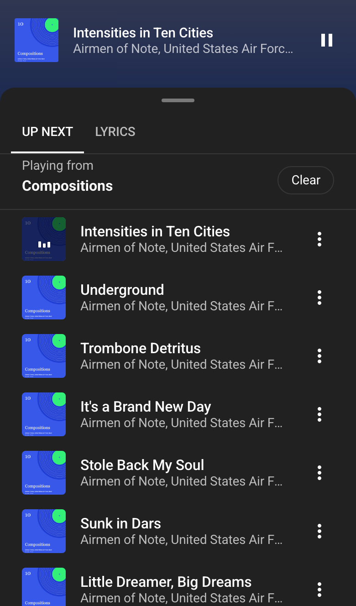
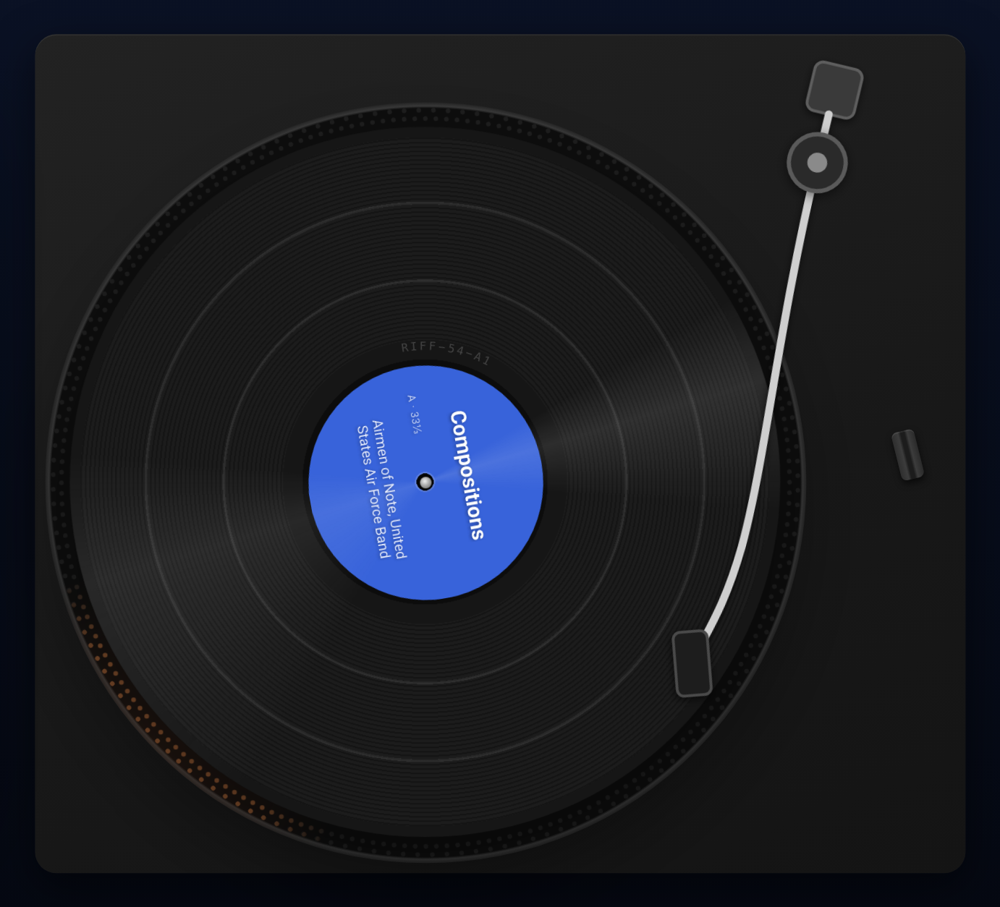
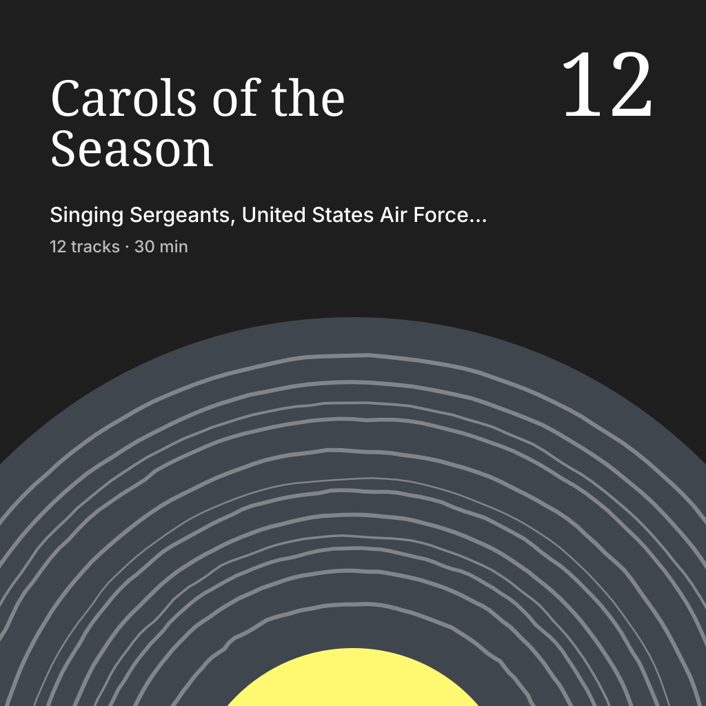
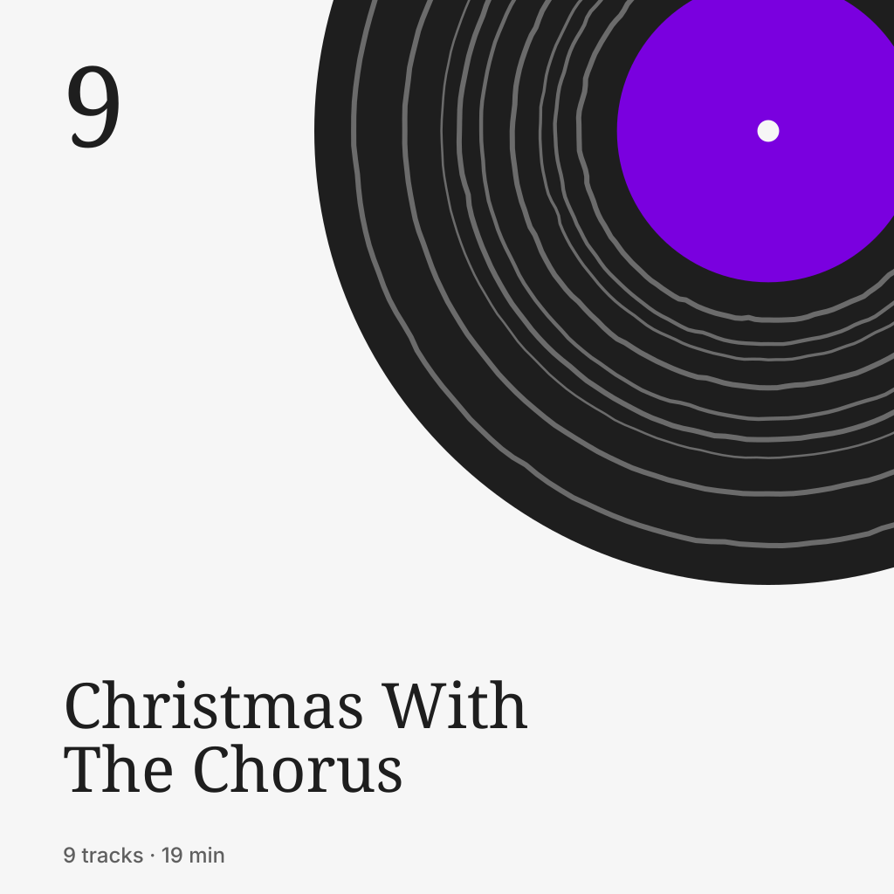
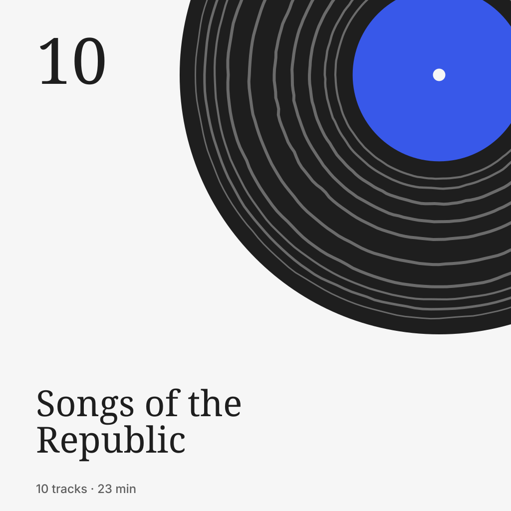

Own every note
Riff turns the music in your WordPress Media Library into a streaming player on your own site.
Try the demo or download Riff {{version}}

From the Media Library to the lock screen
Upload an album. Riff gives it a page and plays it from your own host, all the way to the lock screen.





Every album on a turntable
Now Playing sets the album's sleeve down beside a turntable and plays the record on it.

- Cut to the album A band of grooves for each track, as wide as it is long.
- Turned over At a side's end the arm lifts, the record turns, the needle drops.
- Needle first Play lowers the arm, then the platter comes up to speed.
- 33⅓ or 45 An album is an LP; a single is a 7-inch.
Every album has a cover
When an album has none, Riff draws one from its music: a groove for each track, in colours taken from its name, so no two are alike.











Try it in your browser
The demo is a WordPress site running in your browser, with four albums in the public domain by the bands and choruses of the United States Air Force, Army and Navy, three of them sung, with their words timed to the music.